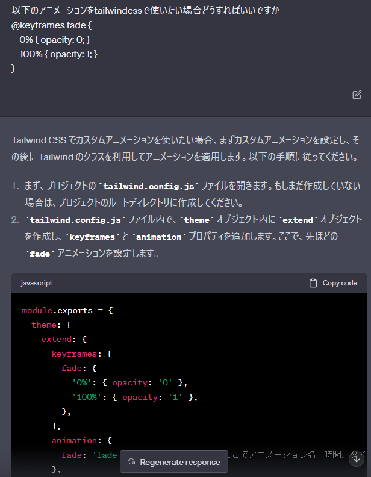

はじめまして、koshinです！ゲイとして、自分らしさを大切にしながらWebの世界にも挑戦しています。
AWS SAAの勉強をしているとき、S3バケットを使って静的webサイトをホスティングできると知り、せっかくなのでゲイとしての視点を込めた日記的なWebサイトを作ってみました。
このサイトは、簡単にレスポンシブ対応ができるTailwindCSSを使って構築しています。トップページ左上のタイトルのように、フェードインなどのアニメーションを付けようとすると、通常のCSSと少し違う書き方をする必要がありますよね。そこも、ちょっとした“個性”として楽しんでいます。
そこで、chatGPTに頼んでコードを変換してもらうことにしました。こんな時、テクノロジーが本当に素晴らしいと感じますよね。

chatGPTはこのようにコードを変換してくれるんですよ！今回は修正も必要なく、実際に動作しているのを見て感動しました。ただ、正直なところ、将来AIが進化しすぎて、私たちの仕事が無くなるんじゃないかという不安も…ちょっとだけあります（笑）。
今後、このサイトをもっとゲイらしく、自由で楽しい場所にしていきたいなと思っています。もし、たまにでも覗いてくれたら嬉しいです！私と一緒に、このWebの世界を楽しんでいきましょうね。